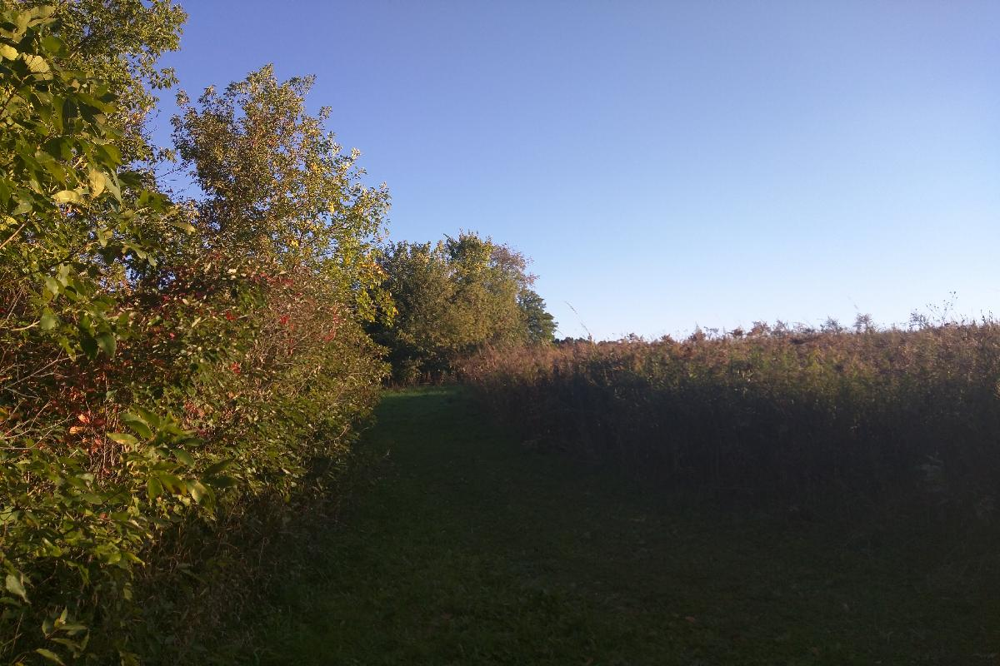
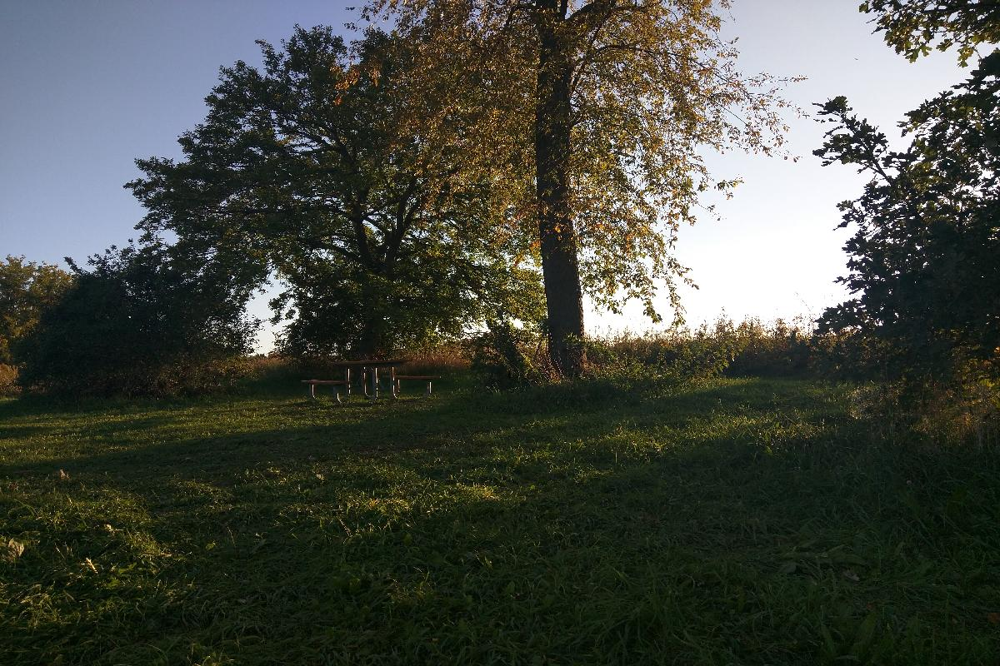
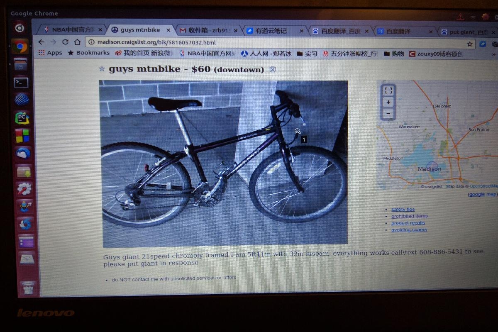

Day 10, Thursday Oct 06 2016
Two Trades 两桩交易
- 迟迟拿不到Wiscard，许多事情都没法着手进行，花了不少功夫来到地球另一边却无所事事并不是什么好的感觉，趁着新鲜期还没过，我也不断尝试从各种角度了解这边的生活，这里简单记录一下最近的两桩交易，也算从侧面反映一下这边的生活吧。
- 新到一个地方，购买各种生活必需品是当务之急之一，对于某些物件，二手物品的往往更合适些，特别像我这种只呆一年的交流生，已经成了第一选择。买到好的二手物品的第一要素就充足的信息，然而，通过华人QQ群或者车站告示栏所得到的信息十分有限，于是我尝试了Craigslist这个网站，通俗说点就是美国的58同城，不过到底谁先谁后还很难说。
- 观察了几天，发现这个网站的本地活跃度高，物品更新的快，交易频繁，是靠谱的象征，遂决定交易一单试试手。第一个目标是自行车。麦屯环境清新，道路上大多有专用的自行车道，骑车上下班即可锻炼也省去了等公交的烦恼。但价格上新车大多二、三百刀，还是二手车更合适些。Craigslist上的二手自行车价格也参差不齐，从几十刀到上千刀都有，好在我在国内也买过几辆二手车，对品牌相对了解些。最终锁定了辆60刀的捷安特，05年的车型，图片上成色可以，虽说是老车但这个价格还是有些偏低。通过短信交流，我们约办公楼前当面交易，从短信文风来看对面应该是个老美。当天交易还是比较顺利的，冷风小雨，老美迟到了十分钟左右，一个三十岁左右的白人，衣衫粗犷但很热情，我简单看了看没问题当即交钱成交。总的来说这辆车还是很不错的，虽然当天骑回家的路上车链子就断了（有老化的的原因也有我操作的原因，后我从亚马逊上购买车链工具等修好，两周以后才真正使用，此处不提），但在其之后一直兢兢业业的服役到大雪季节，两个多月时间，现在想想算是比较成功的交易了。
- 第二桩买卖是一台显示器，来美国只带了台笔记本，工作娱乐都不方便，买台二手显示器也是计划中的一步。因为并不急用，所以我同时联系了几个卖主，在email沟通时也都进行了还价，事实证明这是很有必要的。最终我敲定了一台23寸戴尔显示器，2011年的1080p的型号，应该是当时的旗舰款。最初网站上卖家要$90，我email说$50吧，卖家回复最低$60；正巧当时有点忙，没有回复，后来卖家再次联系我说$50拿走吧，这个价格的确很不错了，我果断说ok，但我没有车。最终卖家丈夫下班后开车给我送到了家里，人不错，简单聊了聊，他们在当地工作，就是UWM毕业的，后来还加了他Facebook。
- 回过头来看看，这两次交易还是听成功的。虽说每件东西都少不了些磕磕绊绊（自行车链子自己修了两个星期，显示器重新配的连接线），但东西质量都很好，也满足了我的需求。特别是第一个不羁的白人大叔，现在想想应该是专门拼装出售二手自行车的卖家，不过车子没问题，是不是真正二手也并不那么重要了。不过由此可见，像Craigslist这种类型的网站水还是比较深的，做交易还是仔细甄别，不可冲动。话虽如此，但购物往往都是冲动的结果，如何在果断与仔细之间做好权衡，也是购物的一门学问呢。
Snapshot
- 10月初的Mendota湖，一片蔚蓝。
- 湖边的自然保护公园，一条林荫小道蜿蜒前行，是我最喜欢的跑道。

- 公园跑道途中的一景，高高的好像是薰衣草？不太清楚。

- 树荫，木桌，草坪，夕阳斜照，微风习习。
- 公交站的公告栏，内容是我比较感兴趣的英语培训。这里似乎还保留着许多原始但有效的信息传递方式，公告栏就是其中之一。

- 一张Craigslist网站的截图，图中的自行车现在已经静静的停在楼下。